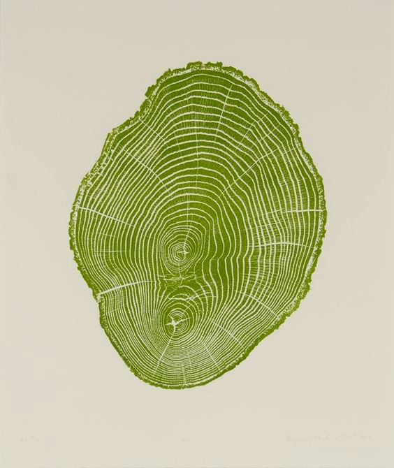

Yuyu Ancestral es un portal de encuentro con el cuido y nutrición de la tierra y los humanos que la habitamos. En este espacio de aprendizaje y difusión de conocimiento los soportes van mutando cómo nuestros caminos, son tan solo los vehículos para llegar a quienes sintonizan con nuestra esencia.
También creamos objetos mágicos, medicinas puente que puedan ayudarnos a recordar aquello que somos mientras sanamos y reconstruimos nuestras partes fragmentadas. Atrás de este portal somos personas, poniendo de nuestra esencia la parte más pura para asistir a quienes sientan el llamado. Aprendemos con constancia de todo lo que nos rodea y utilizamos ese aprendizaje como el néctar de cada una de nuestras creaciones. Somos grandes exploradores y apasionados por la vida y todo lo que ella nos despierta.
